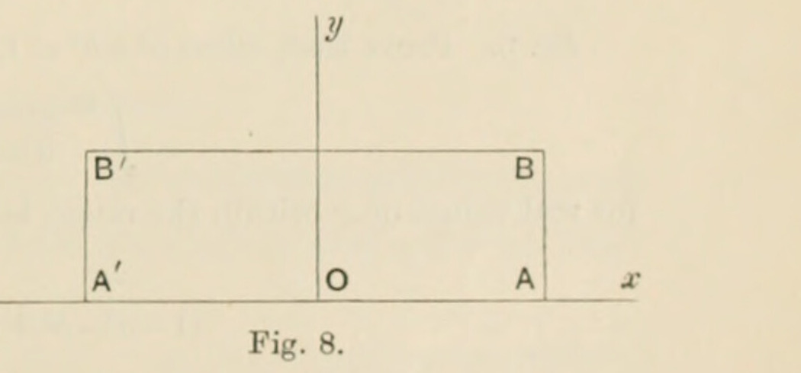
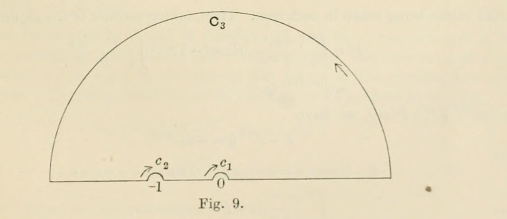

§25. Examples
Printed pages 43–49. Mathematical notation has been transcribed as TeX; the wording follows the scan, with line wrapping normalized.
The further consideration of integrals of functions, that do not possess the character of uniformity over the whole area included by the curve of integration, will be deferred until Chap. IX. Some examples of the theorems proved in the present chapter will now be given.
Ex. 1
It is sufficient merely to mention the indefinite integrals (that is, integrals from an arbitrary point to a point \(z\)) of rational integral functions of the variable. After the preceding explanations it is evident that they follow the same laws as integrals of similar functions of real variables.
Ex. 2
Consider the integral
taken round a simple curve.
When \(n\) is 0, the value of the integral is zero if the curve do not include the point \(a\), and it is \(2\pi i\) if the curve include the point \(a\).
When \(n\) is a positive integer, the value of the integral is zero if the curve do not include the point \(a\) (by §17); and the value of the integral is still zero if the curve do include the point \(a\) (by §22, for the function \(f(z)\) of the text is 1 and all its derivatives are zero). Hence the value of the integral round any curve, which does not pass through \(a\), is zero.
We can now at once deduce, by §20, the result that, if a holomorphic function be constant along any simple closed curve within its region, it is constant over the whole area within the curve. For let \(t\) be any point within the curve, \(z\) any point on it, and \(C\) the constant value of the function for all the points \(z\); then
the integral being taken round the curve, so that
since the point \(t\) lies within the curve.
Ex. 3
The integral
is taken round a circle, centre the origin and radius greater than unity; and the function \(f(z)\) is holomorphic everywhere within the circle. Prove that the value of the integral is
Ex. 4
Consider the integral \(\int e^{-z^2}\,dz\).
In any finite part of the plane, the function \(e^{-z^2}\) is holomorphic; therefore (§17) the integral round the boundary of a rectangle (fig. 8), bounded by the lines \(x=\pm a\), \(y=0\), \(y=b\), is zero: and this boundary can be extended, provided the deformation remain in the region where the function is holomorphic. Now as \(a\) tends towards infinity, the modulus of \(e^{-z^2}\), being \(e^{-x^2+y^2}\), tends towards zero when \(y\) remains finite; and therefore the preceding rectangle can be extended towards infinity in the direction of the axis of \(x\), the side \(b\) of the rectangle remaining unaltered.

Along \(A'A\), we have \(z=x\): so that the value of the integral along the part \(A'A\) of the boundary is
Along \(AB\), we have \(z=a+iy\), so that the value of the integral along the part \(AB\) is
Along \(BB'\), we have \(z=x+ib\), so that the value of the integral along the part \(BB'\) is
Along \(B'A'\), we have \(z=-a+iy\), so that the value of the integral along the part \(B'A'\) is
The second of these portions of the integral is \(e^{-a^2}\cdot i\cdot\int_0^b e^{y^2-2ayi}\,dy\), which is easily seen to be zero when the (real) quantity \(a\) is infinite.
Similarly the fourth of these portions is zero.
Hence as the complete integral is zero, we have, on passing to the limit,
whence
or
and therefore, on equating real parts, we obtain the well-known result
This is only one of numerous examples1 in which the theorems in the text can be applied to obtain the values of definite integrals with real limits and real variables.
Ex. 5
By taking the integral \(\int e^{-z^2}\,dz\) along the perimeter of a sector of a circle between the radii of a circle given \(\theta=0\), \(\theta=\frac14\pi\), and the intercepted part of the circumference of radius \(r\) which is ultimately increased without limit, establish the value \((\frac18\pi)^{1/2}\) for each of Fresnel's integrals
Ex. 6
Prove that, when \(a^2+b^2<1\), the value of the integral
for real values of \(x\) within the range, is
Ex. 7
Evaluate the following integrals by the process of contour integration:—
where \(a\) and \(b\) are real and lie between 0 and 1;
Ex. 8
Consider the integral
where \(n\) is a real positive quantity less than unity.
The only infinities of the subject of integration are the origin and the point \(-1\); the branch-points are the origin and \(z=\infty\). Everywhere else in the plane the function behaves like a holomorphic function; and, therefore, when we take any simple closed curve enclosing neither the origin nor the point \(-1\), the integral of the function round that curve is zero.
Choose the curve, so that it lies on the positive side of the axis of \(x\) and that it is made up of:—
- a semicircle \(C_3\) (fig. 9), centre the origin and radius \(R\) which is made to increase indefinitely;
- two semicircles, \(c_1\) and \(c_2\), with their centres at 0 and \(-1\) respectively, and with radii \(r\) and \(r'\), which ultimately are made infinitesimally small;
- the diameter of \(C_3\) along the axis of \(x\) excepting those ultimately infinitesimal portions which are the diameters of \(c_1\) and of \(c_2\).

The subject of integration is uniform within the area thus enclosed although it is not uniform over the whole plane. We shall take that value of \(z^{n-1}\) which has its argument equal to \((n-1)\theta\), where \(\theta\) is the argument of \(z\).
The integral round the boundary is made up of four parts.
(a) The integral round \(C_3\). The value of \(z\cdot\frac{z^{n-1}}{1+z}\), as \(|z|\) increases indefinitely, tends uniformly to the limit zero; hence, as the radius of the semicircle is increased indefinitely, the integral round \(C_3\) vanishes (§24, II., Note).
(b) The integral round \(c_1\). The value of \(z\cdot\frac{z^{n-1}}{1+z}\), as \(|z|\) diminishes indefinitely, tends uniformly to the limit zero; hence as the radius of the semicircle is diminished indefinitely, the integral round \(c_1\) vanishes (§24, I., Note).
(c) The integral round \(c_2\). The value of \((1+z)\frac{z^{n-1}}{1+z}\), as \(|1+z|\) diminishes indefinitely for points in the area, tends uniformly to the limit \((-1)^{n-1}\), i.e., to the limit \(e^{(n-1)\pi i}\). Hence this part of the integral is
being taken in the direction indicated by the arrow round \(c_2\), the infinitesimal semicircle. Evidently \(\frac{dz}{1+z}=i\,d\theta\) and the limits are \(\pi\) to 0, so that this part of the whole integral is
(d) The integral along the axis of \(x\). The parts at \(-1\) and at 0 which form the diameters of the small semicircles are to be omitted; so that the value is
This is what Cauchy calls the principal value of the integral
Since the whole integral is zero, we have
Let
and
principal values being taken in each case. Then, taking account of the arguments, we have
Since \(i\pi e^{n\pi i}+P+P'=0\), we have
so that
Hence
Ex. 9
In the same way it may be proved that
where \(n\) is an integer, \(a\) is positive and \(\omega\) is \(e^{i\pi/(2n)}\).
Ex. 10
By considering the integral \(\int e^{-z}z^{n-1}\,dz\) round the contour of the sector of a circle of radius \(r\), bounded by the radii \(\theta=0\), \(\theta=\alpha\), where \(\alpha\) is less than \(\frac12\pi\) and \(n\) is positive, it may be proved that
on proceeding to the limit when \(r\) is made infinite. (Briot and Bouquet.)
Ex. 11
By considering the integral \(\int(z^2-1)^m z^{-\alpha i-m-1}\,dz\), taken round a semicircle, prove that
provided the real part of \(m\) is greater than \(-1\).
Similarly deduce the value of
where the real parts of \(m\) and \(n\) are each greater than \(-1\), from a consideration of the integral
taken round a semicircle.
(Many of the results stated in de Haan, Nouvelles tables d'intégrales définies, can be obtained in a similar manner.)
Ex. 12
Consider the integral
where \(n\) is an integer. The subject of integration is meromorphic: it has for its poles (each of which is simple) the \(n\) points \(\omega^r\) for \(r=0,1,\ldots,n-1\), where \(\omega\) is a primitive \(n\)th root of unity; and it has no other infinities and no branch-points. Moreover the value of \(\frac{z}{z^n-1}\), as \(|z|\) increases indefinitely, tends uniformly to the limit zero; hence (§24, III.) the value of the integral, taken round a circle centre the origin and radius \(>1\), is zero.
This result can be derived by means of Corollary II. in §19. Surround each of the poles with an infinitesimal circle having the pole for centre; then the integral round the circle of radius \(>1\) is equal to the sum of the values of the integral round the infinitesimal circles. The value round the circle having \(\omega^r\) for its centre is, by §20,
Hence the integral round the large circle
Ex. 13
By considering the integral
taken round a semicircle, prove that
provided \(a\) is positive.
Ex. 14
Taking as the definition of Bernoulli's numbers that they are the coefficients in the expansion
prove (by contour integration) that
In the same way, obtain expressions for the coefficients, in the expansion in powers of \(x\), of the quantity
(Hermite.)
Ex. 15
In all the preceding examples, the poles that have occurred have been simple: but the results proved in §21 enable us to obtain the integrals of functions which have multiple poles within an area. As an instance, consider the integral
round any curve which includes the point \(i\) but not the point \(-i\), these points being the two poles of the subject of integration, each of multiplicity \(n+1\).
We have seen that
where \(f(z)\) is holomorphic throughout the region bounded by the curve round which the integral is taken.
In the present case \(a\) is \(i\), and \(f(z)=\frac{1}{(z+i)^{n+1}}\); so that
and therefore
Hence we have
In the case of the integral of a function round a simple curve which contains several of its poles, we first (§20) resolve the integral into the sum of the integrals round simple curves each containing only one of the points, and then determine each of the latter integrals as above.
Another method, that is sometimes possible, makes use of the expression of the uniform function in partial fractions. After Ex. 2, we need retain only those fractions which are of the form \(A/(z-a)\): the integral of such a fraction is \(2\pi iA\), and the value of the whole integral is therefore \(2\pi i\sum A\). It is thus sufficient to obtain the coefficients of the inverse first powers which arise when the function is expressed in partial fractions corresponding to each pole. Such a coefficient \(A\), being the coefficient of \(1/(z-a)\) in the expansion of the function, is called by Cauchy the residue of the function relative to the point.
For example,
so that the residues relative to the points \(-1\), \(-\omega\), \(-\omega^2\) are \(\frac29\), \(\frac29\omega\), \(\frac29\omega^2\) respectively. Hence if we take a semicircle, of radius \(>1\) and centre the origin with its diameter along the axis of \(y\), so as to lie on the positive side of the axis of \(y\), the area between the semi-circumference and the diameter includes the two points \(-\omega\) and \(-\omega^2\); and therefore the value of
taken along the semi-circumference and the diameter, is
that is, the value is \(-\frac49\pi i\).
Ex. 16
Let \(u\) denote
\(f\) being a rational integral function \(\sum A_{mn}z^m z'^n\) of the complex variables \(z\), \(z'\), the integrations being taken in the positive sense round the closed contours \(C\), \(C'\), of which \(C\) is a circle of unit radius with its centre at the origin. Shew that \(u=0\) if \(C'\) lies wholly inside \(C\), or if \(C\) and \(C'\) lie wholly outside one another, and that \(u=-4\pi^2\sum A_{mm}\) (\(m=0,1,2,\ldots\)) if \(C'\) completely surrounds \(C\). Discuss also the value of \(u\) if \(C'\) is a circle passing through the points \(\pm i\) but not coinciding with \(C\), and \(f(z,z')=f(-z,-z')\).
(Math. Trip., Part II., 1898.)
Note. For further applications of Cauchy's theory of residues, together with many references to Cauchy's own results, Lindelöf's monograph Le calcul des résidus (Gauthier-Villars, 1905) may be consulted.
- See Briot and Bouquet, Théorie des fonctions elliptiques (2nd ed.), pp. 141 et sqq., from which examples 4 and 8 are taken. ↩